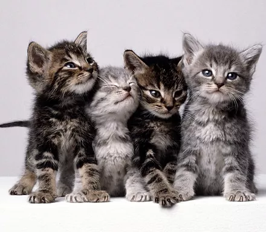
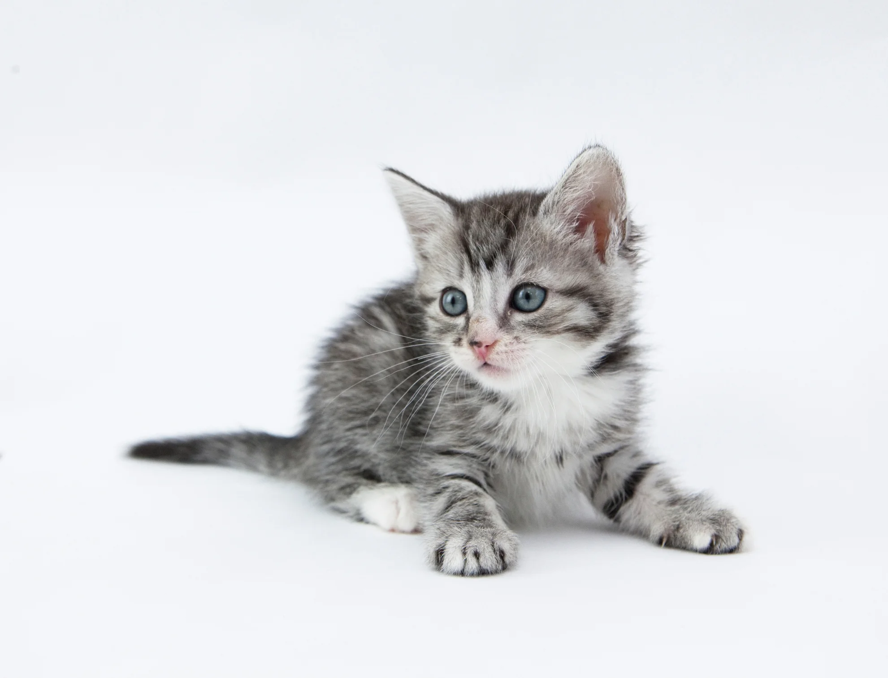

EN ZONA NORTE

EN ZONA SUR

EN ZONA OESTE

Para retirar tu gatito tenemos distintos puntos de encuentro en distintas zonas de Buenos Aires. Tu gatito se encuentra en una de ellas y lo importante aquí es que el o ella sufra lo menos posible, para eso podemos coordinar un encuentro o podes venir a retiralo vos teniendo en cuenta que lo ideal es que el gatito no vaya de un refugio a otro para que no se estrese o tenga problemas de adaptación . A continuación tenemos mapas a Zona Norte, a Zona Sur y a Zona Oeste